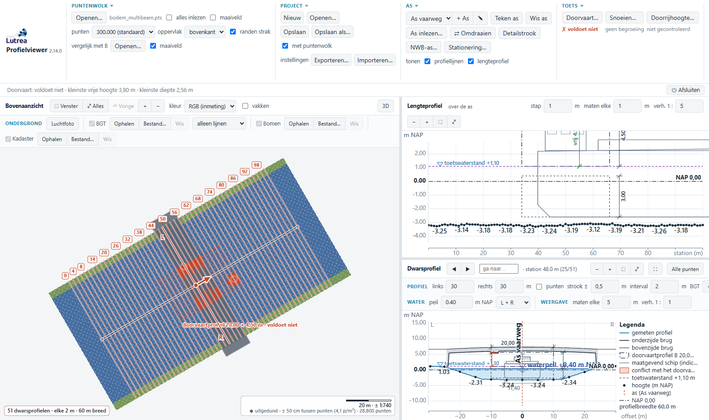
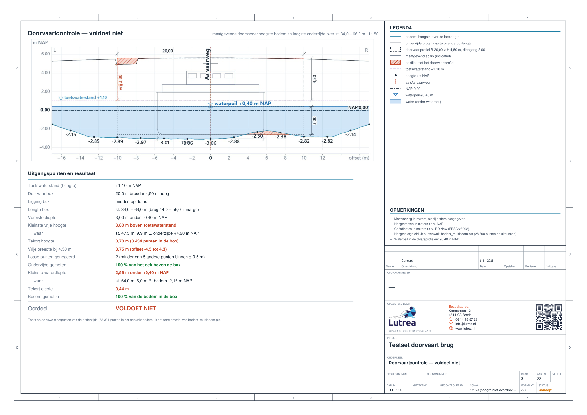
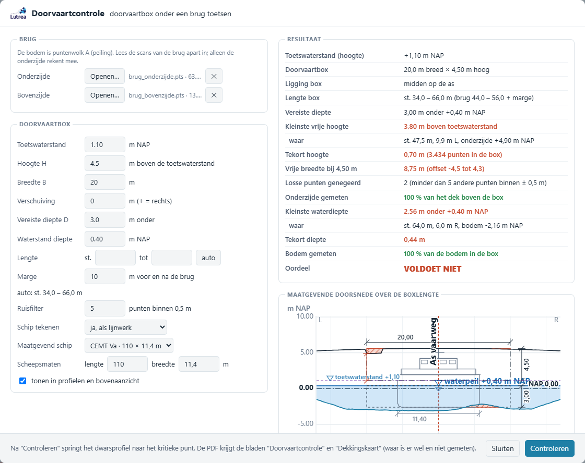

Lutrea Profielviewer · tool 2 van 4
Doorvaarthoogte
Past het schip onder de brug, in hoogte én diepte?
Voor vaarwegbeheerders en hun meetbureaus

Profielen ToolDoorvaarthoogteDoorrijhoogteSnoeien
De tool zet een doorvaartprofiel in het water en toetst het tegen de echte onderzijde van de brug en de echte bodem, allebei uit metingen. Je krijgt een helder oordeel, met de plek en de maat van elk tekort, en een kaart van wat niet gemeten is.
1
Inlezen
Bodempeiling of multibeam als puntenwolk, met de as van de vaarweg in de vaarrichting.
2
Brug erbij
De scan van de onderzijde van de brug; de bovenzijde mag erbij voor beeld en tekening.
3
Toetsen
Toetswaterstand, hoogte H, breedte B, verschuiving en vereiste diepte D. Het maatgevend schip (CEMT I t/m Va) komt in de tekening.
4
Opleveren
PDF-blad Doorvaartcontrole met de maatgevende doorsnede, de dekkingskaart en GeoPackage.

Ruwe punten
getoetst op de meetpunten van de onderzijde, niet op een gemiddeld vlak
Hoogte + diepte
vrije hoogte boven de toetswaterstand én waterdiepte in het profiel
CEMT I – Va
maatgevend schip in de tekening; de toets zelf is het profiel dat je opgeeft
Dekkingskaart
laat zien waar niet gemeten is, met station, oppervlak en advies


Wat je krijgt
- Oordeel voldoet / voldoet niet, met de kleinste vrije hoogte en waar
- Het tekort, de vrije breedte op hoogte H en de kleinste waterdiepte
- Profielen met het doorvaartprofiel, de brug in doorsnede en de conflicten gearceerd
- 3D: brug, water en profiel in groen of rood; met één klik naar de brug
- PDF-bladen Doorvaartcontrole en Dekkingskaart
- GeoPackage met de box en de conflicten
Waarom het werkt
- Liggers, leidingen en uitsteeksels blijven zichtbaar: geen driehoeksnet dat ze wegpoetst
- Vogels en spatwater tellen niet mee dankzij het ruisfilter
- Maten achteraf aanpassen: het oordeel rekent direct opnieuw
- De dekkingskaart voorkomt een "voldoet" op een plek die niet gemeten is
- Alles in RD en m NAP, klaar voor de vaarwegbeheerder